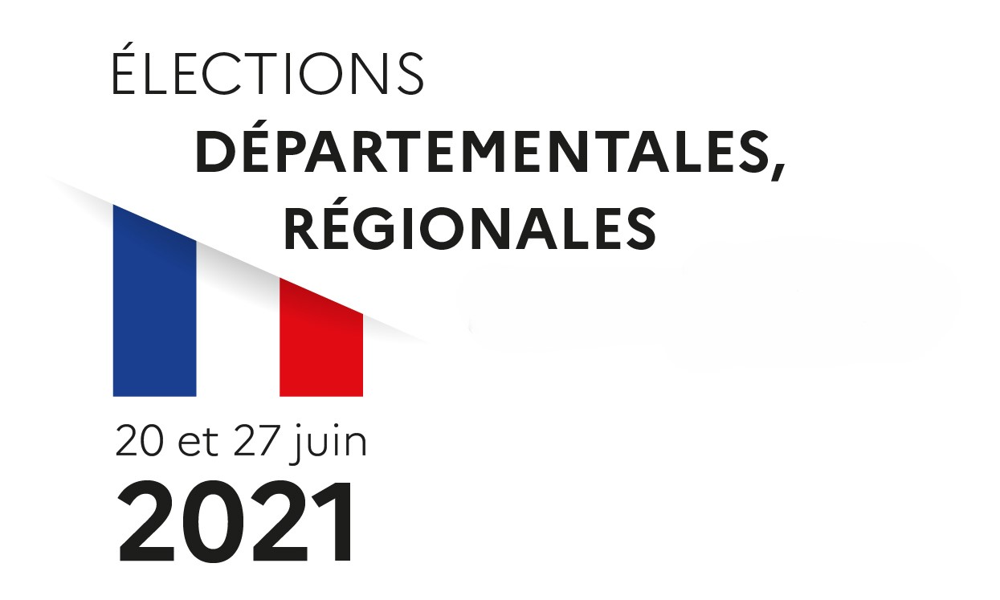
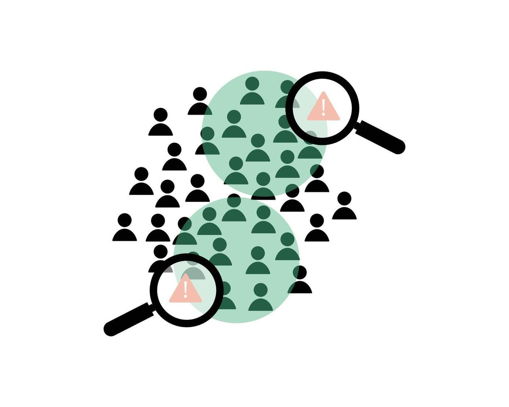
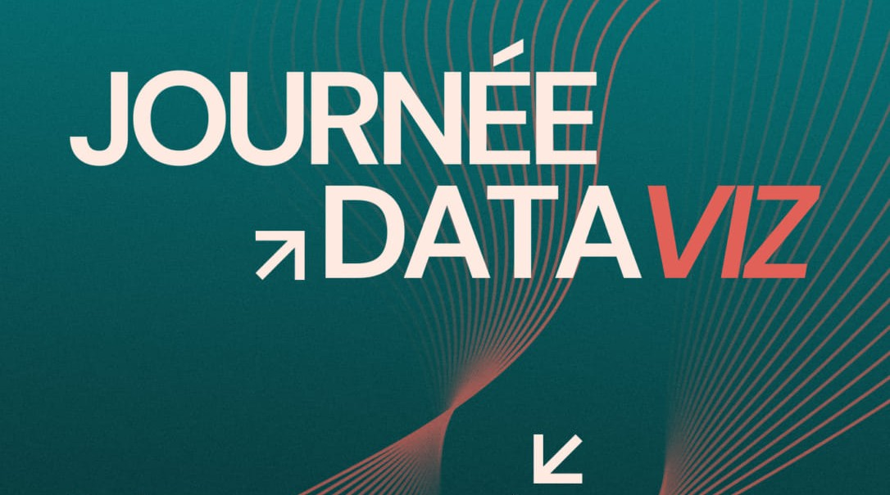
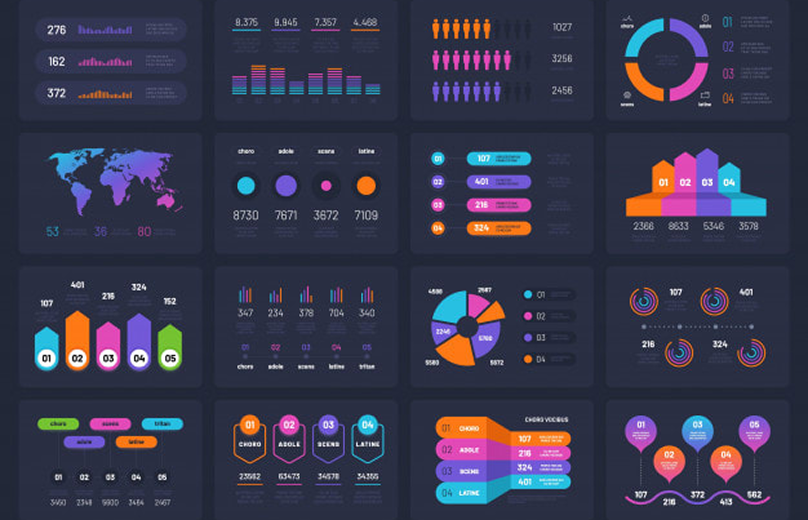

Projets de ma première année

Présentation d’un territoire économique et culture

Production de données en entreprise

Mise en œuvre d'une enquête
Écriture et lecture de fichiers de données

Création d'un reporting EXCEL VBA

Conception et implémentation d'une base de données

Régression sur des données réelles

Estimation par échantillonnage

Dataviz (concours)

Indicateurs de performance

Analyse, reporting et datavisualisation